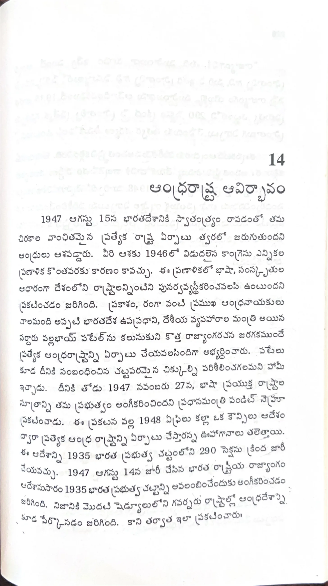

ముద్రిత పుట 225
scanతో మాన్యువల్గా ధృవీకరించిన పాఠ్యం

14 ఆంధ్రరాష్ట్ర ఆవిర్భావం 1947 ఆగస్టు 15న భారతదేశానికి స్వాతంత్ర్యం రావడంతో తమ చిరకాల వాంఛితమైన ప్రత్యేక రాష్ట్ర ఏర్పాటు త్వరలో జరుగుతుందని ఆంధ్రులు ఆశపడ్డారు. వీరి ఆశకు 1946లో విడుదలైన కాంగ్రేసు ఎన్నికల ప్రణాళిక కొంతవరకు కారణం కావచ్చు. ఈ ప్రణాళికలో భాష, సంస్కృతుల ఆధారంగా దేశంలోని రాష్ట్రాలన్నింటిని పునర్వ్యవస్థీకరించవలసి ఉంటుందని ప్రకటించడం జరిగింది. ప్రకాశం, రంగా వంటి ప్రముఖ ఆంధ్రనాయకులు చాలామంది అప్పటి భారతదేశ ఉపప్రధాని, దేశీయ వ్యవహారాల మంత్రి అయిన సర్దారు వల్లభాయ్ పటేల్ను కలుసుకుని కొత్త రాజ్యాంగరచన జరగకముందే ప్రత్యేక ఆంధ్రరాష్ట్రాన్ని ఏర్పాటు చేయవలసిందిగా అభ్యర్థించారు. పటేలు కూడ దీనికి సంబంధించిన చట్టపరమైన చిక్కుల్ని పరిశీలించగలమని హామీ ఇచ్చాడు. దీనికి తోడు 1947 నవంబరు 27న, భాషా ప్రయుక్త రాష్ట్రాల సూత్రాన్ని తమ ప్రభుత్వం అంగీకరించిందని ప్రధానమంత్రి పండిట్ నెహ్రూ ప్రకటించాడు. ఈ ప్రకటన వల్ల 1948 ఏప్రిలు కల్లా ఒక కార్యనిర్వాహక ఆదేశం ద్వారా ప్రత్యేక ఆంధ్ర రాష్ట్రాన్ని ఏర్పాటు చేస్తారన్న ఊహాగానాలు తలెత్తాయి. ఈ ఆదేశాన్ని 1935 భారత ప్రభుత్వ చట్టంలోని 290 సెక్షను క్రింద జారీ చేయవచ్చు. 1947 ఆగస్టు 14న జారీ చేసిన భారత తాత్కాలిక రాజ్యాంగ ఆదేశానుసారం 1935 భారత ప్రభుత్వ చట్టాన్ని అవలంబించేందుకు అంగీకరించడం జరిగింది. నిజానికి మొదటి షెడ్యూలులోని గవర్నరు రాష్ట్రాల్లో ఆంధ్రదేశాన్ని గూడ పేర్కొనడం జరిగింది. కాని తర్వాత ఇలా ప్రకటించారు: